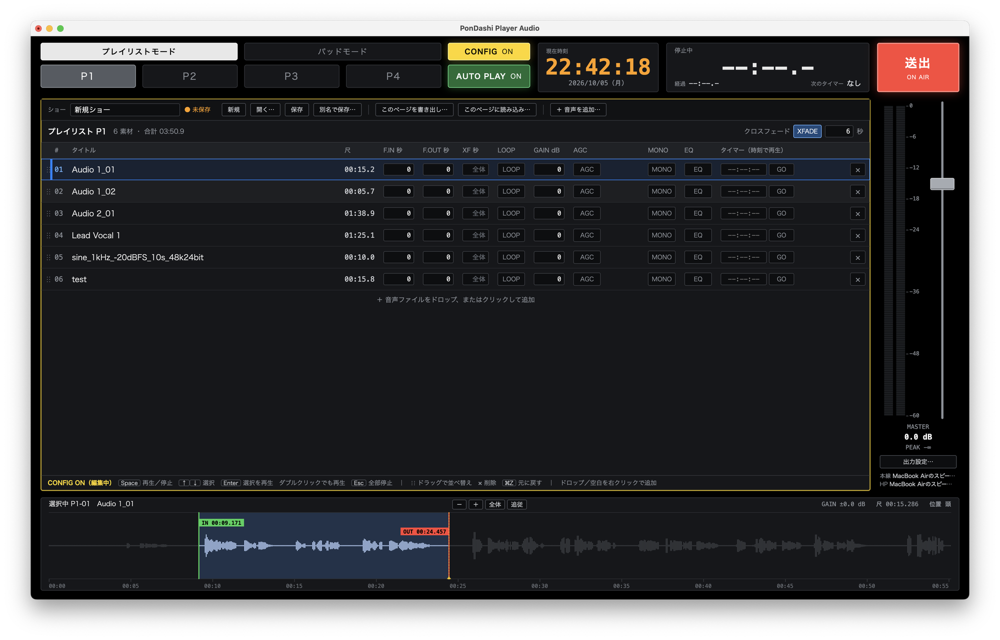
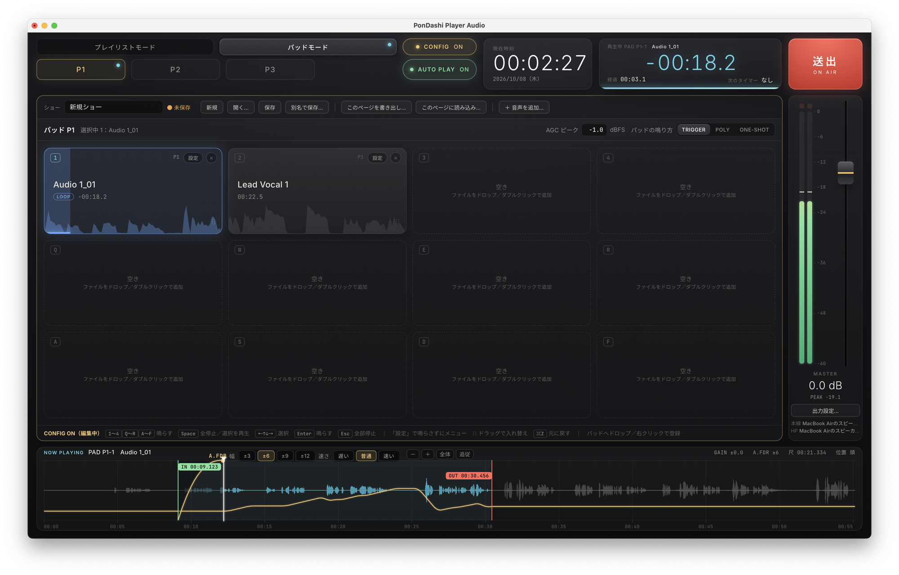
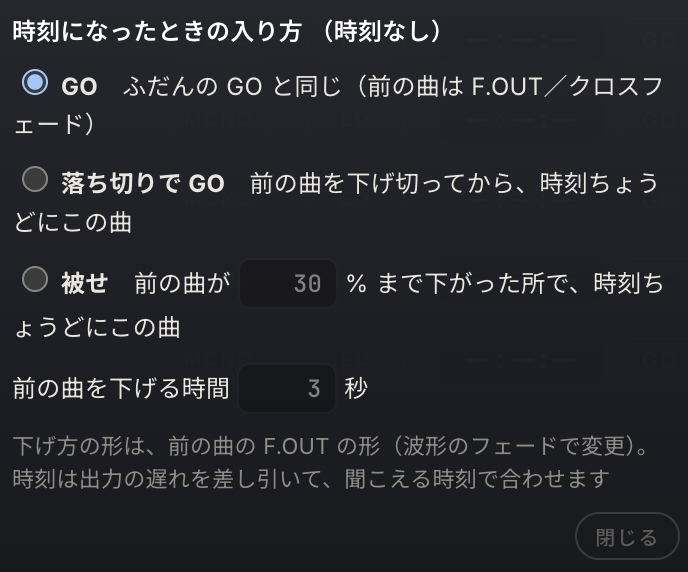
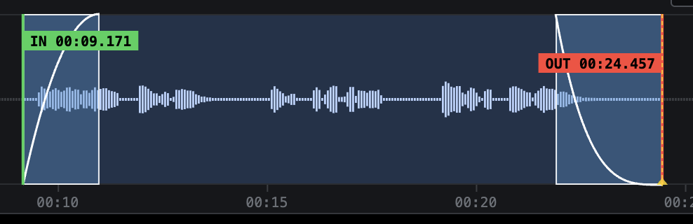
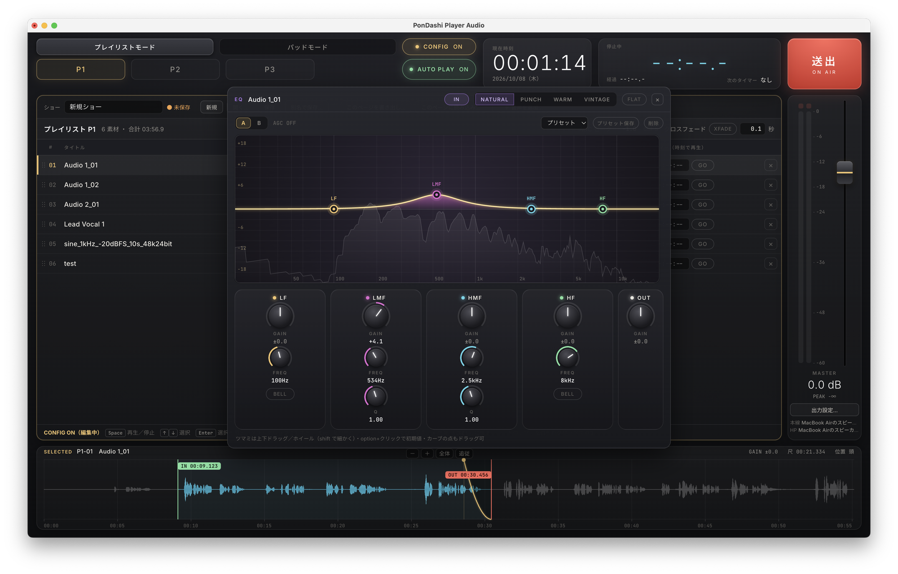
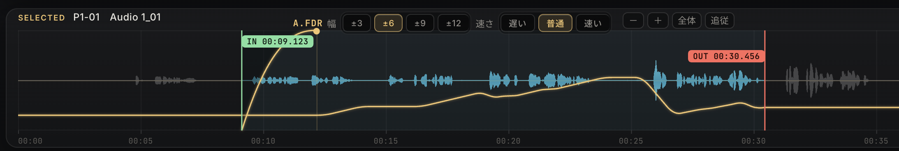
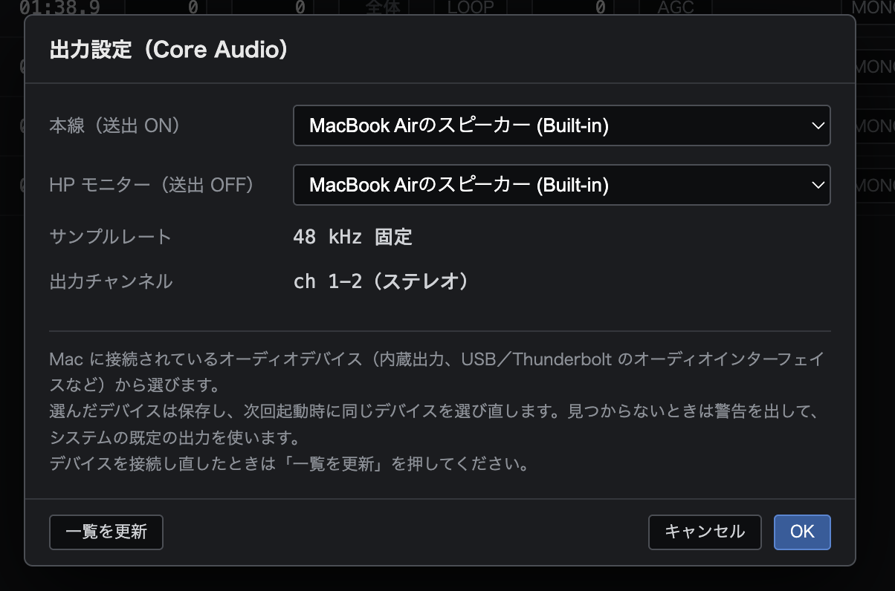

PonDashi Player Audio
A Mac app for firing audio cues in broadcast, live events and theatre. One key and the cue goes. During the show it stays in play-only mode, so nothing gets changed by accident.

Built around how a show runs
Firing, linking, preparing, shaping and routing — in the order you need them.
- FireDuring the show

A playing pad shows time remaining and progress; the waveform below also shows A.FDR moves. (Interface in Japanese.) Playlist
Three pages. Space play/stop, ↑↓ select, Enter play selected, Esc stop all.
Pads
3 pages × 12 pads. Three modes: TRIGGER (only the pressed pad plays, others crossfade out), POLY (layer pads) and ONE-SHOT (always plays to the end, so a second press can’t stop it by mistake).
CONFIG mode
The app opens in play-only mode. Editing is possible only after pressing CONFIG, so settings don’t change mid-show.
- LinkBetween cues

How a timed cue comes in, including how the previous cue is faded down. Crossfade
Global on/off and length, with per-cue overrides.
AUTO PLAY
When a cue ends, the next one on the page starts with no gap. Stops after the last cue.
Timer
Start a cue at an exact time — straight in, after the previous cue fades out, or overlapping once it has dropped to a set level. Output latency (including Bluetooth) is compensated, so it lands when it’s heard.
- PrepareBefore the show

IN/OUT flags and fade lines, edited by dragging directly on the waveform. Waveform editing
Drag to set IN/OUT, loop, zoom and follow the playhead. Edit points snap to zero crossings to avoid clicks. Edit while it plays.
Fades
Drag on the waveform to set length and curve freely, or pick a preset: linear, equal power, S-curve and more.
Shows
Export and import single pages. The last show opens at launch.
- ShapeLevel and tone

4-band EQ over a live spectrum. Drag the points on the curve or the knobs. 
A.FDR shows its moves as a yellow line over the waveform, with selectable range and speed. AGC
Normalizes each cue’s peak to a level you set (dBFS).
A.FDR (auto fader)
For narration and dialogue: smooths out level changes the way an operator rides a fader.
4-band EQ
Four characters (NATURAL, PUNCH, WARM, VINTAGE), 2× oversampling, A/B compare, presets and output gain. VINTAGE follows a 1970s three-band discrete EQ design.
- RouteOutputs

Output settings: separate devices for main and the HP monitor. Two outputs
Send main and HP (monitor) to different audio devices, switched with the on-air button.
How to buy
Buy on the official website (Japan only). 1 license (1 Mac) is ¥1,000 incl. tax; choose 1–5 Macs at checkout. Your license key appears right after payment.
Download the app (macOS 13 or later, Apple silicon; license key required)
Requirements
Please check that your Mac meets these before purchasing.
| OS | macOS 13 (Ventura) or later |
|---|---|
| Mac | Mac with Apple silicon (M1 or later) only. Does not run on Intel-based Macs. |
| Language | The app’s interface is in Japanese. |
| Audio files | WAV, AIFF, CAF, MP3, M4A (AAC), FLAC, Ogg and more. The App Store version cannot read Apple Lossless (ALAC). |
| Output | Any audio device available on your Mac (48 kHz, channels 1–2). Two outputs: main and HP. |
| Data collection | None (the official website version sends license information only when registering or deregistering a Mac). Privacy policy |
| Version | 1.0.0 |
Before you use it
Media is linked, not copied
Audio files are not copied into the show; the app refers to the original files where they are stored (linked).
- Moving, deleting or renaming the original files makes those cues unplayable (offline). Leave the media folder in place until the show is over.
- Moving to another Mac: copying the show file does not bring the linked media with it. Move the whole media folder and check that every cue plays on the new Mac.
Storage and Mac performance
When loading or transferring audio and video from external drives or over a network, the read/write speed of the storage (SSD/HDD) and the Mac’s performance are usually the biggest bottleneck — more than file size or the connection standard. Audio is read from storage when cues are loaded. Keep media on the internal SSD or a fast external SSD, and test on the actual show equipment beforehand.